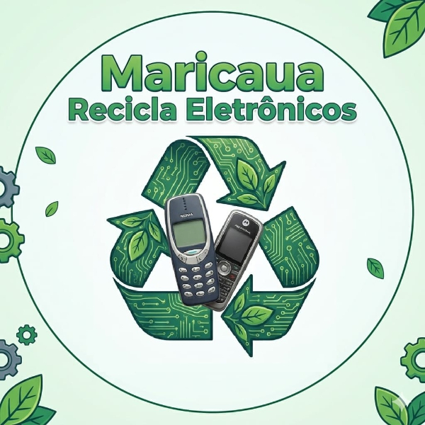
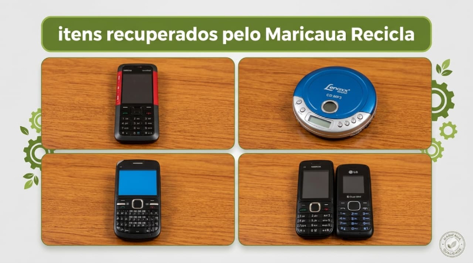

Fale no WhatsAppO Maricaua Recicla Eletrônicos conserta, reaproveita peças e encaminha o descarte correto do que não pode ser recuperado em Belém–PA. Você pode doar seu aparelho antigo ou vender por um valor justo.

Nascentes da Amazônia urbana merecem menos lixo e mais reuso. Atuamos em Belém–PA resgatando celulares que iriam para a gaveta ou para o lixo, realizando limpeza, troca de componentes, testes de bateria e atualização de software quando possível. O que volta a funcionar é encaminhado para reuso solidário ou comercialização acessível; o restante vira fonte de peças ou é destinado à logística reversa certificada.
Buscamos ou recebemos o aparelho e registramos o estado.
Avaliamos bateria, tela, placa e software para decidir entre reparo, reaproveitamento de peças ou descarte.
Limpeza, solda, substituição de componentes e testes.
Reuso, doação social ou logística reversa com parceiros.
O descarte inadequado de celulares libera metais pesados e dificulta a recuperação de materiais valiosos. Ao prolongar a vida útil e garantir o descarte correto, reduzimos a extração de recursos, economizamos energia e evitamos contaminação do solo e da água. Separe seus dispositivos antigos e encaminhe com responsabilidade.
Aceitamos celulares antigos, carregadores, cabos e baterias.
Sim. Avaliamos o aparelho e oferecemos um valor justo conforme o estado.
São destinados à logística reversa certificada.